Ersti Iidrück us Kabul
geschrieben am Friday, February 15, 2013
Grad im Vorus:
- Under anderem us Sicherheitsgründ (google translate nid möglich) wechsle ich uf Schwizerdütsch. Wenns öpper nid läsä cha: Schwizerdütsch lerne! :-).
- Bitte entschuldiget wenn ich eu nid grad antworte und wenni eu nid grossi Gschichte schriebe, äs wär eifach zviel allne einzel zschriebe, sogern ich das au mache wür.
- Mini schlecht (Ping > 1s, viel Unterbrüch) Internetverbindig machts umso schwerer zkommuniziere.
Scho bim acho in Kabul ufem Flughafe, hed mer öppe chöne gseh was so uf mich zuechunnt. Dä Flughafe selber isch zwor für afghanischi Verhältnis recht modern, aber überall sind Spure vorhande vo dä letzte 30 Johr Chrieg. So stönd z.B. ufem Flughafe no überall so usrangierti Flüger:
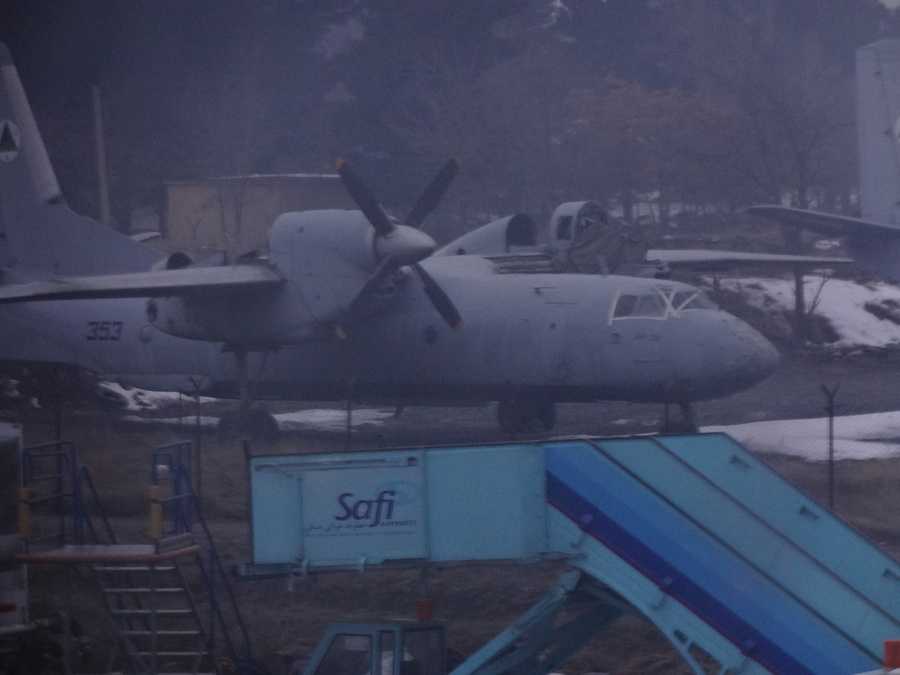Sit dAmerikaner umä sind ischs aber eigentlich relativ ruhig, mä gseht eifach no sehr viel starch bewaffneti Lüt (wo verschiedeni Gebäude bewached). Das kümmeret aber vor allem dAfghane sehr wenig, wil sie das so gwöhnt sind. Über mini Sicherheit (und die vo minere Organisation werdi aber spöter mol schriebe. Zu viel wärs jetzt grad.
Naja ich bi denn abgholt worde vo Bekannte us dä Schwiz und bi jetzt imne relativ schöne Apparment (äs hed sogar ä Duschi, isch also ä Fehlinformation gsi. Ufem gliche "Compound" wohnt au no ä Ami-Familie. Das wär d'Umgebig (mis Apparment ganz links, aber spöter meh zu dem)):
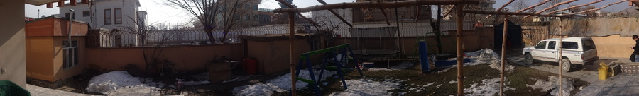Natürlich gits au äs Nochbarshus mit Ischusslöcher:
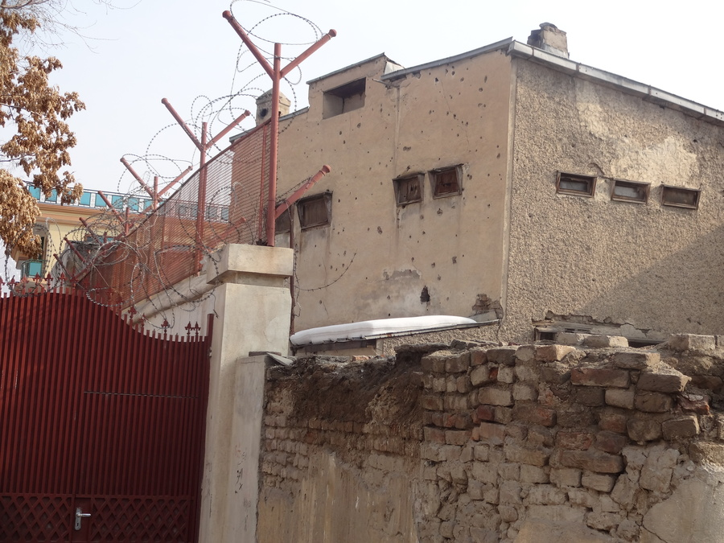A därä Stell mueni ufpasse dasi eu nid nur di schlechte Hüser und schlechte Sache zeige. Äs git durchus au einigi schöni Hüser i üsem Teil vo dä Stadt (eine vo dä richere).
Mir sind denn richtig Markt gange. Dött gseht mer durchus seinte oder andere lustige, unter anderem di extreme Unterschied im "riche" Teil vo Kabul:
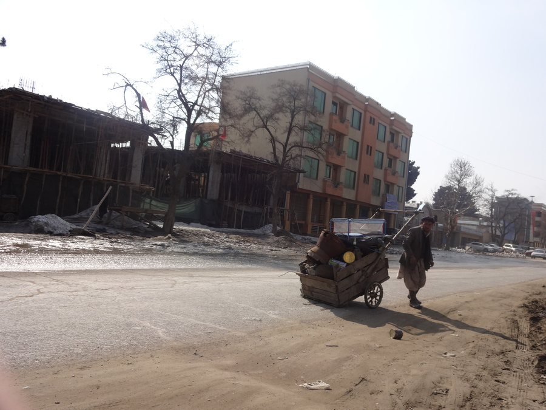Uf dä Strosse fahred nid nur moderni Autos, sondern au Lüt wo ihres Hab und Guet selber ziehed. Das isch übrigens ä sehr ä schöni Stross. Git nur ganz wenig teereti. Im Hintergrund gseht mer äs sehr ä schöns moderns Huus und ä Kabul-Style Baustell:
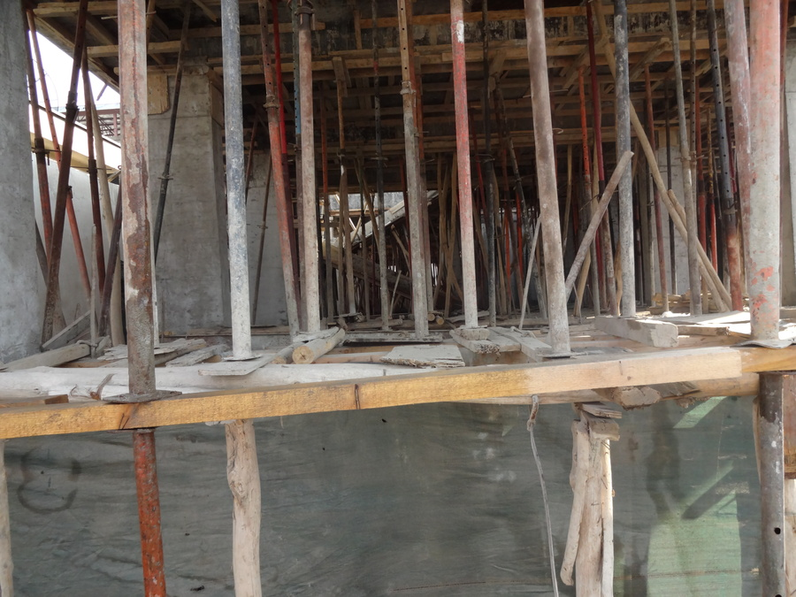Grad dötte heds denn au äs irgendwie interessants Graffiti ka:
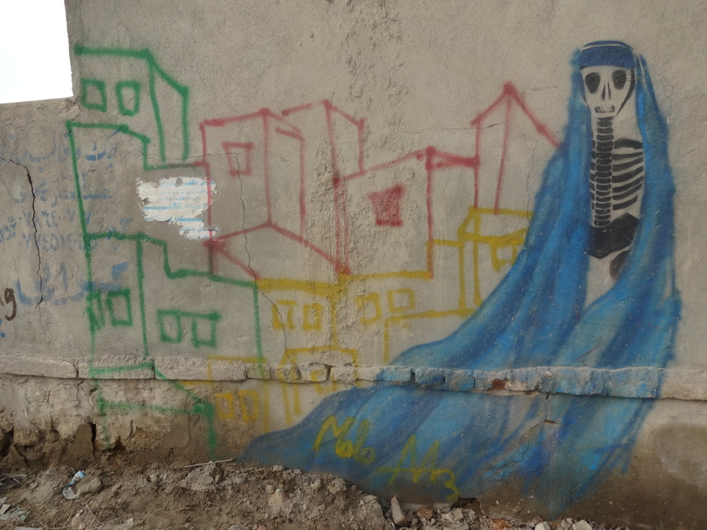Natürlich gsehnd dGraffitis mehrheitlich (äs git nid viel) eher so us:
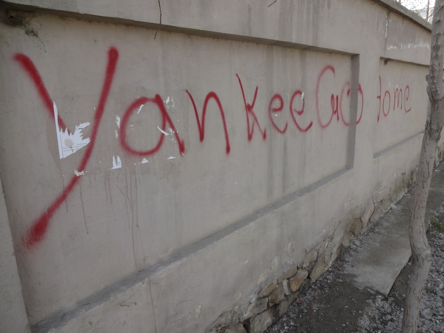In Afghanistan ischs Recycling extrem guet, d.h. alles wird zersch vo Lüt durchsuecht noch bruchbarem und denn dä Schof zum ässä gäh:
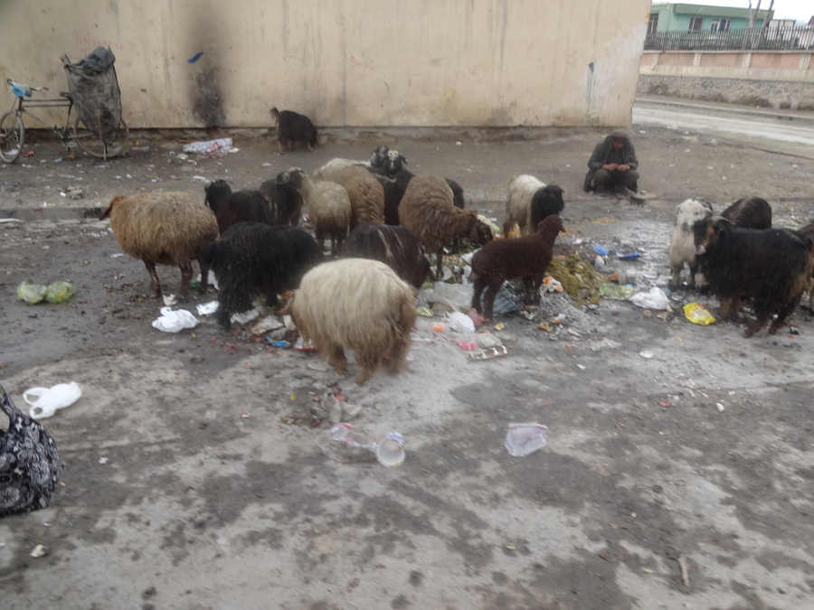Natürlich gits au än MacDonalds. Also ähm nei, eifach än Lade wos gliche Logo brucht :-)
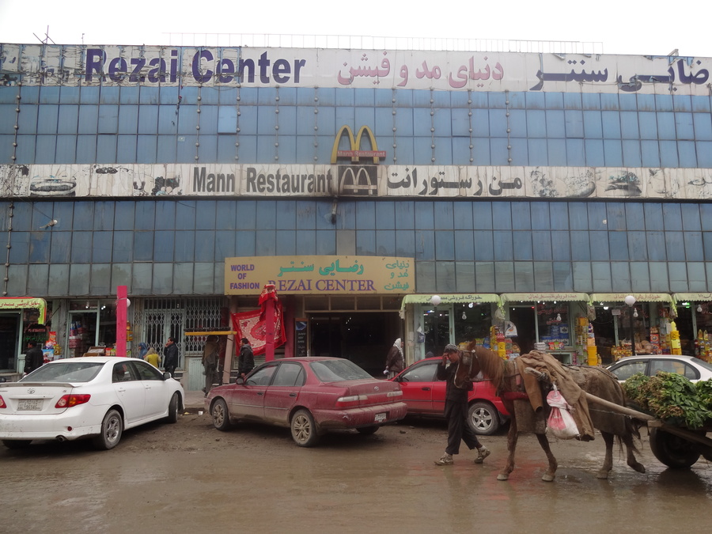Ufem Markt selber bin ich denn amne Bueb begegnet wo ä cooli Flügerjacke agah hed. Dä Ami wo mit mir uf dä Markt cho isch, heden denn uf Dari gfröget obmerän dörfed fotografiere. Naja, nochem Foti sind plötzlich 5 Bettler, Schuehverchäufer und anderi um üs ume gstande, isch grad sehr unagnehm gsi. Aber do dra mueni mi wohl no gwöhne. Das isch aber au dä Grund wieso dasi dFotikamera chum uf Gsichtshöchi nimme und mini Fotene no schlechter sind wie sie sus scho währed. Mä fallt denn eifach sofort als Usländer uf, was bi mir sus no einigermasse goht als Dunkelhoorige. Drum heds au relativ wenig Fotene vo Afghanis. Sie händs nid mega gern.
Naja mir händ üs denn chönne us dä Situation stehle idem dä Ami ä Orange "verschenkt" hed. Dä bueb uf jede Fall hed irgendwelchi Stofftier verchauft.
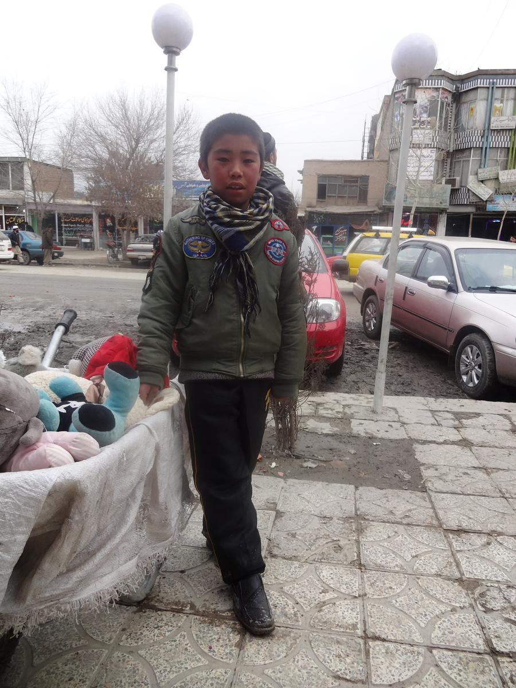Kabul isch im übrige umgäh vo Berge und hed so 350 täg im Johr Sunne (usser a dem Tag woni acho bin :-))
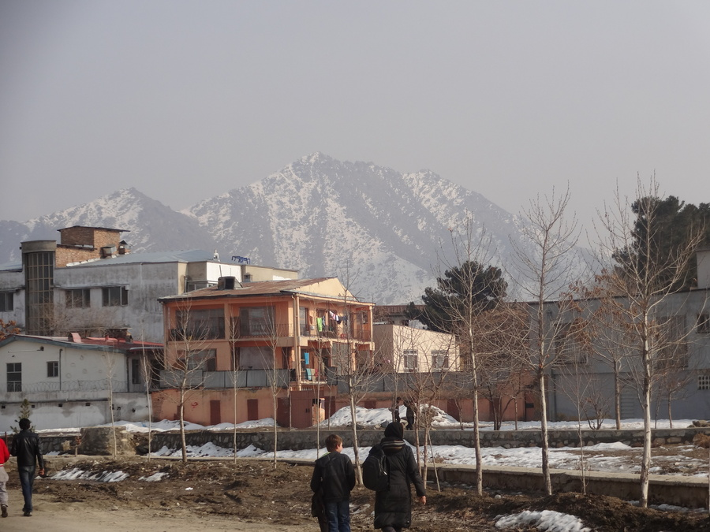Sooo... Cheers!
blog comments powered by Disqus